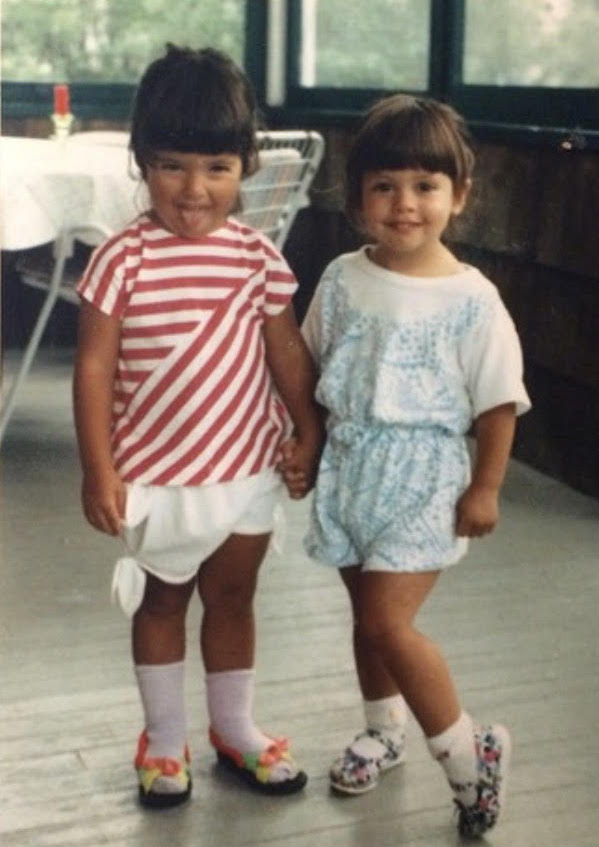
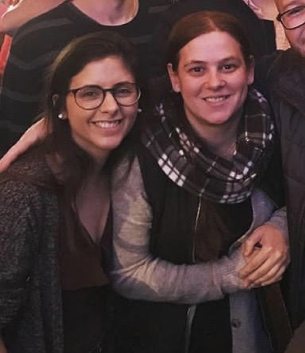
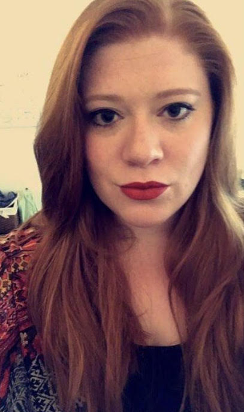
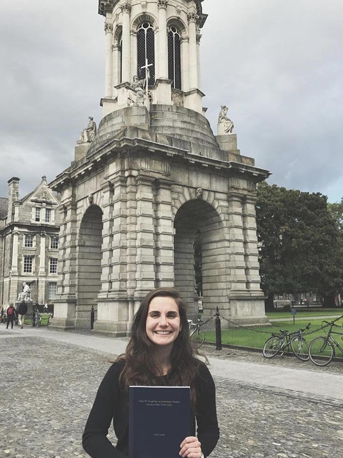
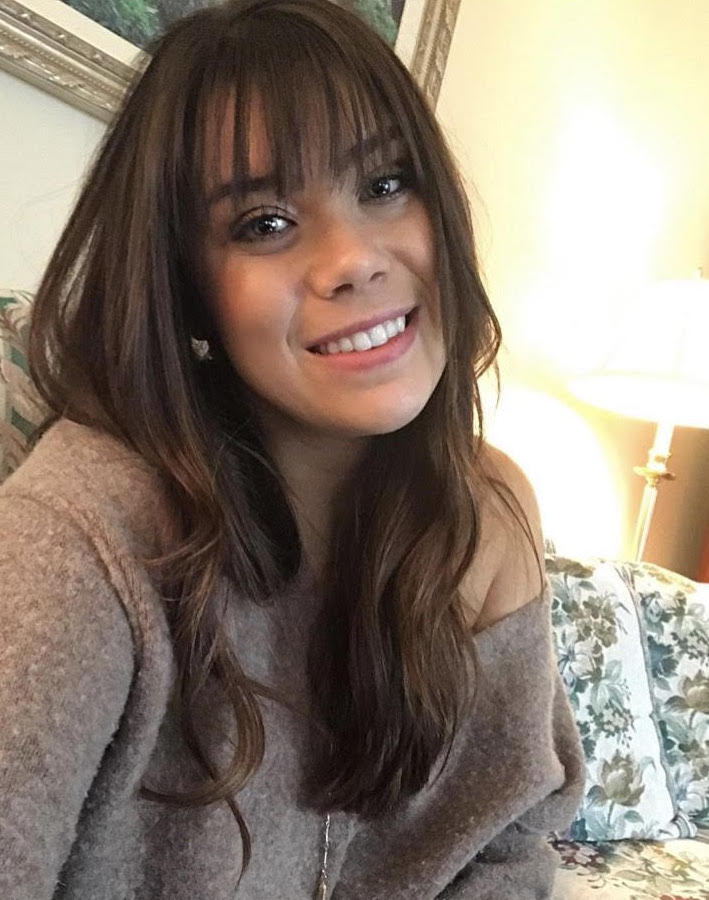
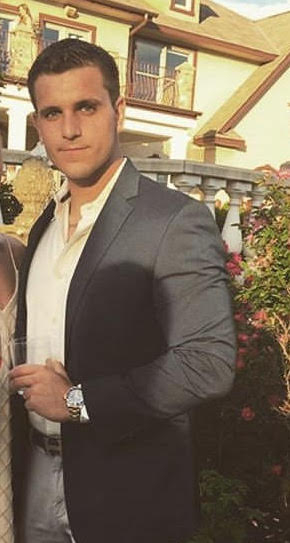
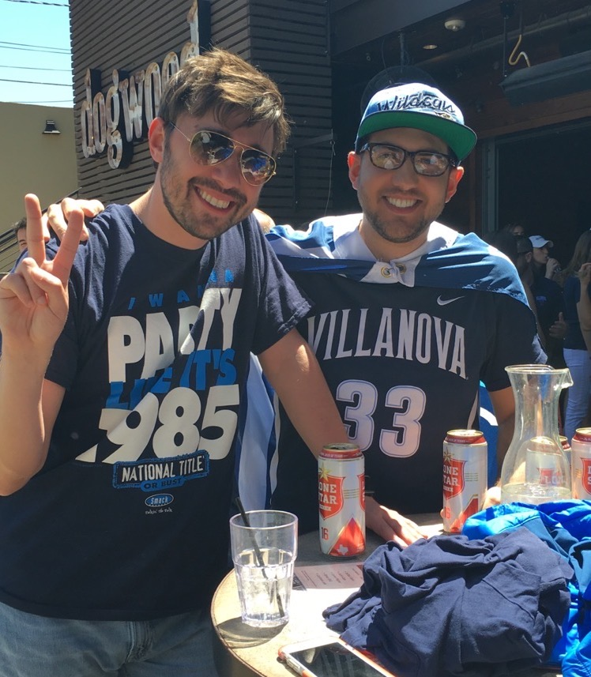
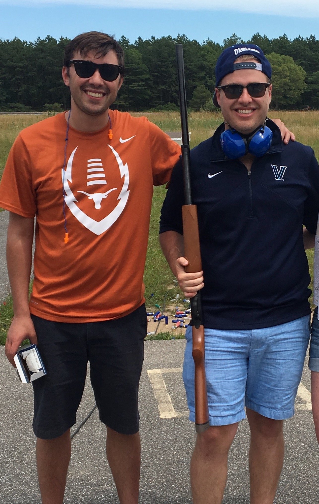
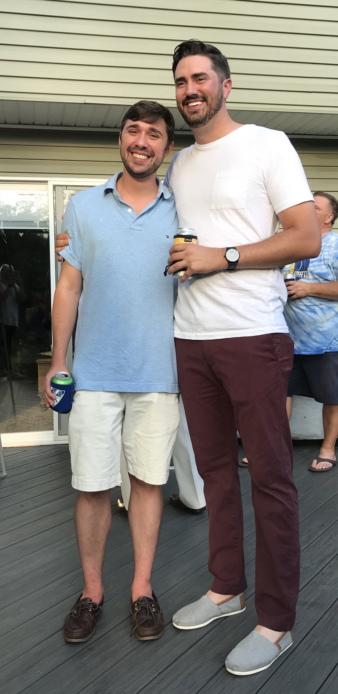

Kaitlin Chupka - Maid of Honor
As the bride’s twin sister, Kaitlin has been by the bride’s side since the womb. The bride admires Kaitlin for her work-hard-play-hard attitude and her ability to run the show. The two can be found yelling at the TV during any Villanova basketball game, reading each other’s minds, and discussing that YES, Flintstone’s push-up ice pops with Nerds existed and yes, they were the best.
Kristin DeVivio
Kristin and the bride have been partners in crime since 2013 when they worked at the YMCA together. Favorite activities include discrete mimosas, adventure walks, and finding out whether or not one can actually fit through a dog door. Inquire with Kristin for results.
Beth Maliszewski
Beth and the bride have been friends since Mrs. Sandburg’s 3rd grade classroom. They flourished as the co-founders of the s-club and can be found delving into Eminem deep tracks and obscure library media. The bride credits Beth with saving her from the wrong boys back in 1999.
Maria Peroni
The bride has been perpetually in awe of future cousin Maria. Maria is a polyglot and world traveler with a huge heart. Legend has it that upon meeting the bride in 2011, Maria knew the bride was “the one”. The two can be found befriending the dog at the party.
Kristen Winschuh
The bride met Kristen, resident astrology expert and wanderlust queen, back during the elementary years. The bride loves Kristen for her adventurous spirit and contagious laughter! The two can be found debating which Disney prince is the most attractive (it’s Prince Eric) and also in rare form at the Turtleback Zoo.
Brian Patson – Best Man

As the groom’s baby brother, Brian has filled the shoes of best friend for the last 27 years. The groom admires Brian for his devilish good looks. Brian is most likely to be found "cutting a rug" at the wedding.
Joseph Peroni
Joey is the groom’s cousin and right hand man. The living definition of "Mr. Dependable". He is the grooms stock advisor and only leads him astray half the time. Joey is most likely to be found slouching in the corner at the wedding.
Richard Buonomo
Richie has been the groom’s little buddy since Ms. Morris's science class. Rich knows what he did. As roommates for all 4 years of college, there is no side of each other they have not seen. Richie is most likely to be found inspecting the waste water facilities at the wedding.
Ethan Loiacono
Ethan and the groom have been amigos since freshman year at Villanova. From boys 2 men. See you in Valinor. Ethan is most likely to be found on stage with the band during the wedding.
Justin Meschter
Justin and the groom found instant friendship while fjording the Delaware River. Remember that time we were on the loading dock that summer? Justin is most likely to be found DOMINATING the limbo competiton at the wedding.